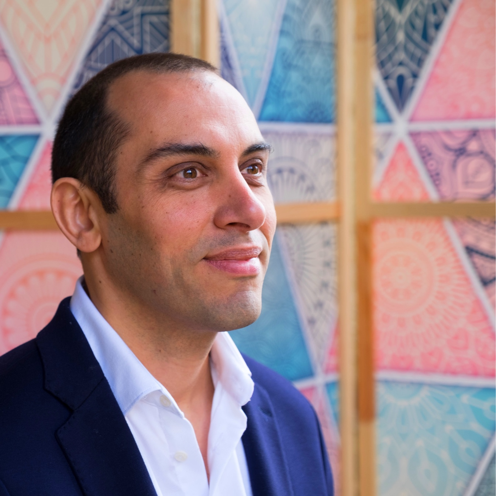
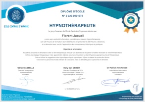
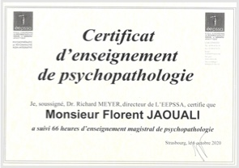

<section class="section article">
  <div class="container">
    <div class="content">
      <h1>Qui suis-je ?</h1>
      <h2>Mon parcours</h2>
      <div class="columns">
        <div class="column is-5">
          
        </div>
        <div class="column is-7">
          <p>Je me suis tourné vers la thérapie vers 2013 pour chercher de l’aide dans les difficultés que je rencontrais dans ma vie (en couple notamment). J’ai été accompagné par une psychothérapeute pendant plusieurs années. De cette façon, j’ai pris conscience de multiples facettes de mon être, des limites que je m’étais créées, des belles choses en moi que je ne voyais pas et de parts de moi qui avaient envie de guérir. Depuis ce basculement, je prends un plaisir immense à me découvrir.</p>
          <p>En parallèle de cette évolution personnelle, la question du travail a émergé : « suis-je où j’ai envie d’être professionnellement ? » A cette époque, je travaillais dans la recherche en design et expérience utilisateur (UX). Ce travail me convenait relativement bien et en même temps je devenais de plus en plus mal à l’aise à l’idée que « il faut adapter l’environnement extérieur aux usagers pour qu’ils s’y sentent bien ». J’ai alors choisi de m’orienter vers l’autre paradigme qui vise non pas à changer l’extérieur mais l’intérieur. Autrement dit, je trouvais qu’œuvrer pour « faire changer toutes les poignées de porte de la planète pour qu’elles soient aisément utilisables pour moi » était bien trop fastidieux là où être content que certaines poignées soient faciles à utiliser et d’autres soient compliquées » était tout à fait simple à faire !</p>
          <p class="light-bg">Voilà donc ce qui m’a amené à devenir hypnothérapeute : <strong>aider les gens à changer de l’intérieur pour qu’ils soient en lien de la façon dont ils le souhaitent avec l’extérieur.</strong></p>
        </div>
      </div>

      <h2>Ma formation</h2>
      <div class="columns">
        <div class="column is-5">
          <p>Ma formation initiale d’hypnothérapeute s’est faite à <a href="https://ecole-centrale-hypnose.fr" target="_blank"><strong>l’École Centrale d’Hypnose</strong></a> (ECH) à Paris en 2019. Il s’agit d’une formation en présence d’environ 50 jours dont 8 jours de psychopathologie en partenariat avec l'<a href="https://www.eepssa.org" target="_blank"><strong>École Européenne de Psychothérapie Socio- & Somato- Analytique</strong></a> (EEPSSA).</p>
          <p>J’ai complété (et continue de compléter) celle-ci avec divers modules complémentaires autour de la sexualité, la gestion des traumatismes et l’hypnose profonde.</p>
        </div>
        <div class="column is-7">
          <div class="columns">
            <div class="column">
              
            </div>
            <div class="column">
              
            </div>
          </div>
        </div>
      </div>


      <h2>Mon type d’hypnose</h2>
      <p>J’ai régulièrement des personnes qui me demandent si je fais de l’hypnose Ericksonienne. La réponse est « oui et non » puisqu’en réalité j’utilise le style d’hypnose qui vous correspond le mieux et qui est le plus adapté à un moment donnée de la séance.</p>
      <p>Comme disait un de mes formateurs : <strong>« Réduire l’hypnose à Milton Erickson serait comme réduire la musique à Mozart. Tout le monde aime la musique, mais tout le monde n’est pas sensible à Mozart. »</strong></p>
      <p class="light-bg">J’ai donc <strong>une approche intégrative de la thérapie</strong> : les différentes approches se complètent et ont toutes leurs limites.</p>
      <div class="highlight">
        <h2 class="title">Vous avez les clés !</h2>
        <div class="subtitle"> Ma posture d’hypnothérapeute</div>
        <div class="columns is-vcentered">
          <div class="column is-3">
            <div class="has-text-centered"><i class="icon icon-cle big-icon"></i></div>
          </div>
          <div class="column is-9">
            <p>Je pars du principe que vous avez en vous les clés pour changer.</p>
            <p>Mon rôle est alors de vous aider à les trouver et les utiliser avec la bonne porte.</p>
            <p>J’ai évidemment énormément de ressources pour vous y aider mais les 3 choses essentielles dont nous avons besoin sont :</p>
            <ul>
              <li>Votre motivation ;</li>
              <li>Votre engagement ;</li>
              <li>Un lien de qualité entre nous (collaboration, confiance et sécurité).</li>
            </ul>
          </div>
        </div>

    </div>
  </div>
</section>
